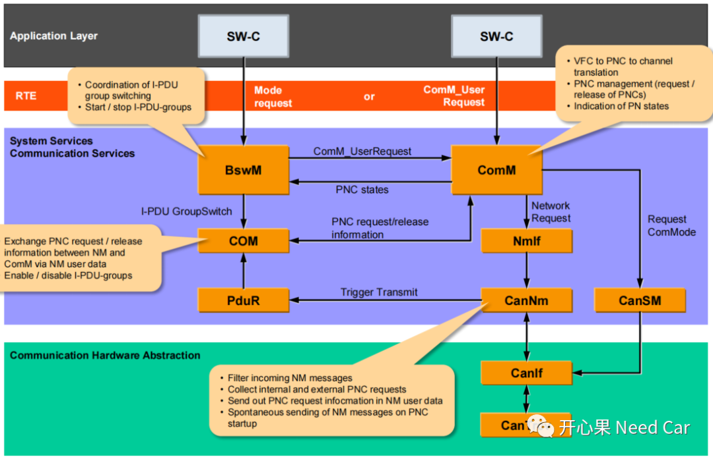
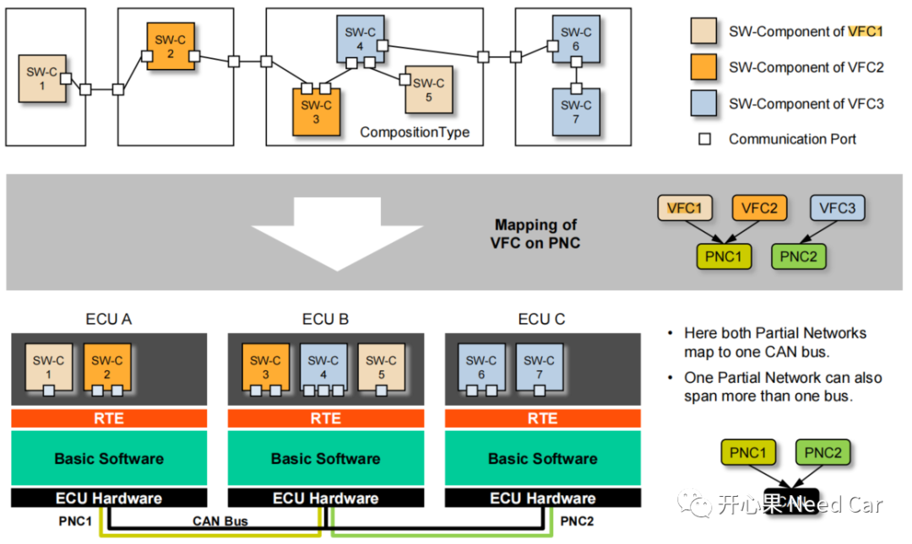
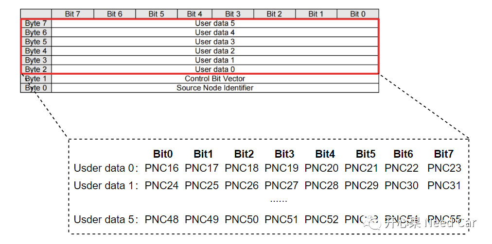
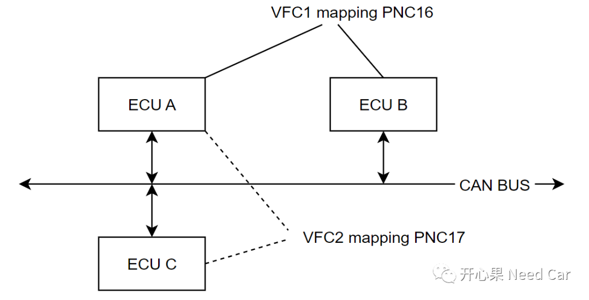
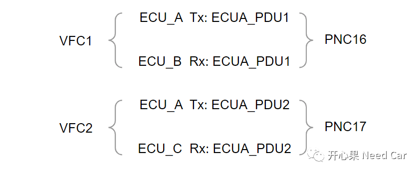
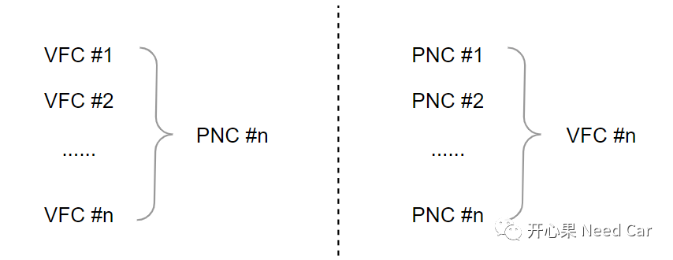
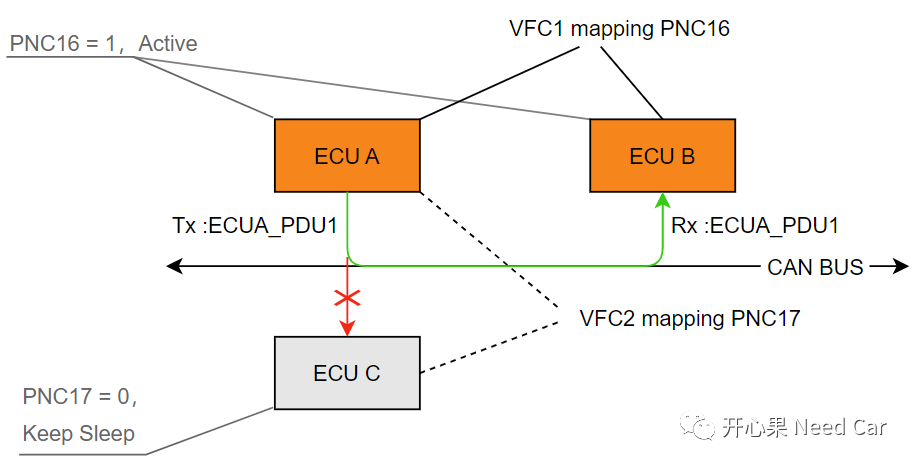

对于Autosar网络管理，之前的文章中讨论过很多，尤其PN（Partial Networking）功能，"开心果 Need Car"算是输出比较多的个人IP号，需要的小伙伴可以看看之前的文章。eg：
Autosar网络管理：网络管理报文CBV(Control Bit Vector)字节详解
Autosar PN网络管理：PNC信息的收/发流程
Autosar网络管理：ERA/EIRA问题QA
Autosar网络管理：被动唤醒和Passive Channel QA
......
本文讨论PN中的VFC。
以CAN总线为例，在CP Autosar的规范中，PN功能涉及的模块如下所示：

如上图，可以看出，整个PN功能，虽然属于网络管理范畴，但是，涉及的模块几乎都是通信栈模块。其实，PN功能就是在管控部分应用报文的通信行为。- 工程中，CAN的网络管理报文常用8 Byte表示，其中，User Data（Byte2~Byte7）占用六个字节，用于交互PNC信息。采用Trigger触发方式，去上层（COM模块）获取PNC信息，之后组成完成的网络管理报文发送到总线；
- 通信请求可由SW-C或者BswM发起，通信请求不仅仅是请求应用报文的收/发，通信请求也包含网络请求（Network Request），由ComM模块控制；
- PNC对应I-PDU Group，而I-PDU Group决定着对应应用报文的Start/Stop，这个开/关动作由BswM的规则决定。
2、VFC（Virtual Function Cluster）
VFC（Virtual Function Cluster），虚拟功能簇：groups the communication on port level between SWC components that are required to realize one or more vehicle functions.解释：将实现一个或多个车辆功能所需的SWC组件之间的通信分组在端口级别。这解释几乎等于看不懂。
先看如下示意：

Autosar架构中，按照功能划分不同的Runnable Entity（运行实体），Runnable Entity依附于软件组件（SW-Component）。SW-Component可以分布于不同的ECU内，通过信息交互（也就是报文）实现特定车辆功能。
PNC（Partial Network Cluster ），局部网络簇: is a group of system signals necessary to support one or more vehicle functions that are distributed across multiple ECUs in the vehicle network.解释：在整车网络中，某些功能需要多个节点参与，节点之间通过信息交互（Signal：信号，包含在PDU中）实现功能。这几个节点就是一个簇（Cluster），这个簇映射到网络信号User Data中的一个Bit位，此Bit位置位与否标识着对应功能是否要启用或者禁止。所以，不同的PNC #n表示不同的网络簇，意味着对应的ECU是否需要通信。NM报文User data与PNC映射关系示意如下：

举例：CAN网络中，ECU A和ECU B构成一个局部网络簇，用PNC 16标识，这个网络簇对应功能1，功能1用VFC1标识；ECU A和ECU C也构成一个局部网络簇，用PNC 17标识，这个网络簇对应功能2，功能2用VFC2标识，如下所示：

如上可以看出，一个ECU可以包含多个功能，因此可以参与多个功能簇，所以，一个ECU可以映射到多个局部网络中。
（二）功能启用和禁止如何通知PNC #n内的ECU?
某个功能的启用或者禁止需要局部网络簇中的ECU配合实现，而ECU之间的配合离不开"对话"，ECU之间如何对话呢？答：通过报文交互。进一步解释局部网络簇ECU之间的对话，示意如下：

比如：功能1（对应VFC1，eg：车辆上高压）的使能，由ECU A主动请求，即：发送ECUA_PDU1报文，通知ECU B，请求车辆上高压。ECU B接收ECUA_PDU1报文后，执行车辆上高压功能。至此，两者配合完成车辆上高压功能。而这个功能只要ECU A和ECU B参与即可，并不需要ECU C参与，所以，ECU A在发送ECUA_PDU1或者ECUB接收ECUA_PDU1时，均需要PNC16置位（=1），即：信息仅在PNC16网络簇内有效。
如上述，VFC对应功能，PNC对应局部网络，功能的启用和禁止依附于对应局部网络激活与否。

举例：ECU A请求ECU B进行充电功能（VFC1标识），对应局部网络簇PNC16。ECU A请求ECU B充电这个消息由ECUA_PDU1携带，示意如下：

由于是ECU A主动请求的行为，所以，ECU A发送的网络管理报文中，PNC16置位（=1），主动唤醒或者让ECU B保持激活，由于ECU C不在PNC 16这个局部网络簇内。因此，ECU C会忽略ECU A的网络管理报文，其网络继续保持在睡眠状态（Sleep）。由于ECU B收到的网络管理报文中，PNC16置位（=1），因此，ECU B被动唤醒，之后，ECU B接收ECUA_PDU1，而ECUA_PDU1中携带请求充电的信号（Signal），随即，ECU B执行充电功能。注意：ECU A主动发起的充电请求，本质是要请求与ECU B的通信，将充电请求信息告知ECU B。ECU A主动请求通信之前，需要先激活网络（这里是PNC16局部网络）。所以，ECU A中的SW-C通过ComM的接口ComM_UserRequest()请求通信，之后，ComM主动拉起网络（网络管理报文发送，PNC16 = 1），同时，让BswM模块使能对应I-PDU Group的通信（ECUA_PDU1被发送）。点击下方关注，一起聊聊Autosar/嵌入式，如果需要，联系作者进群，给你更专业的解答